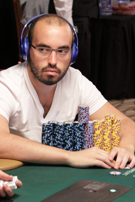

Видове покер
| Омаха | Тексас Холд'ем | Стъд |
Според легендите, които се носят покерът е произлязъл от персийската игра Ас Нас. Тази игра се играе с 25 карти и включва пет различни бои. Причината да се твърди, че покера произлиза от Ас Нас е, че силата на ръцете е подобна. Други историци обаче предполагат, че корените на покера лежат много по- назад в историята и те са от 900 г. пр.н.е. Става въпрос за китайска познавателна игра. Въпреки че не е известно дали по това време е имало карти, със сигурност китайците са имали домино. Интригуваща история за китайския император Муцунг, който играе с домино карти срещу съпругата си. Твърди се, че това е ранна форма на покера.
Откъде идва името на играта? Има няколко теории и по този въпрос. Според едната от тях името идва от немската игра Pochen или Pochspiel, както също е била известна. Друга теория гласи, че френската игра Poque е дала името на днешния покер. Poque е много стар френски глагол, който в превод означава „залагам“. Залозите и блъфа са били най- важните части в нея. Възможно е и играта Poque да е произлязла от немската Pochen. Според друга версия покера идва от английската дума „poke“, която означава намушквам. Също така думата „poke“ преди години е било кодово име в криминалните среди на САЩ за скриване на пари.
| Омаха | Тексас Холд'ем | Стъд |
 |
 | |||
| 1.Ник Петранджело | 2.Дейвид Петърс | 3.Джъстин Бономо | 4.Брин Кени | 5.Дан Смит |
| $4,455,211 | $7,544,287 | $8,339,893 | $11,764,231 | $4,322,960 |